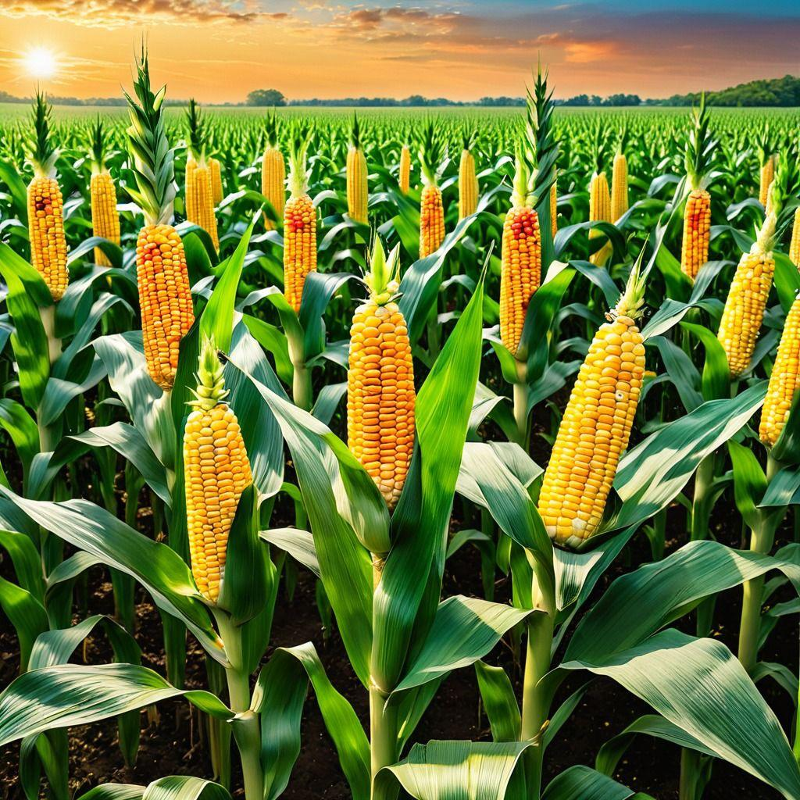

Le maïs est une céréale très cultivée pour l’alimentation humaine et animale. Il pousse dans un climat chaud, sur des sols fertiles et bien drainés, avec un arrosage suffisant. La récolte a généralement lieu 3 à 5 mois après le semis. Riche en glucides, en fibres et en vitamines, le maïs se consomme frais, grillé, bouilli ou transformé en farine pour de nombreuses préparations culinaires.